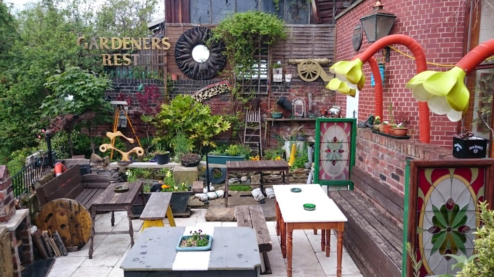
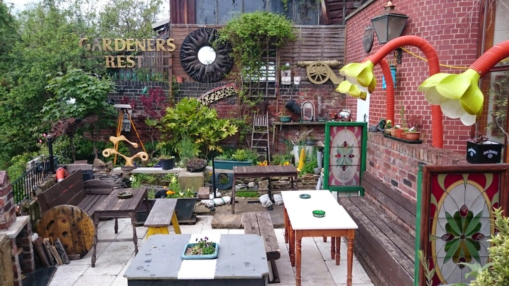

🌾Gardeners Rest🌷
Owned by community members, this easygoing pub hosts live music & offers pints.
Address: 105 Neepsend Lane, Sheffield S3 8AT
Owned by community members, this easygoing pub hosts live music & offers pints.
Address: 105 Neepsend Lane, Sheffield S3 8AT